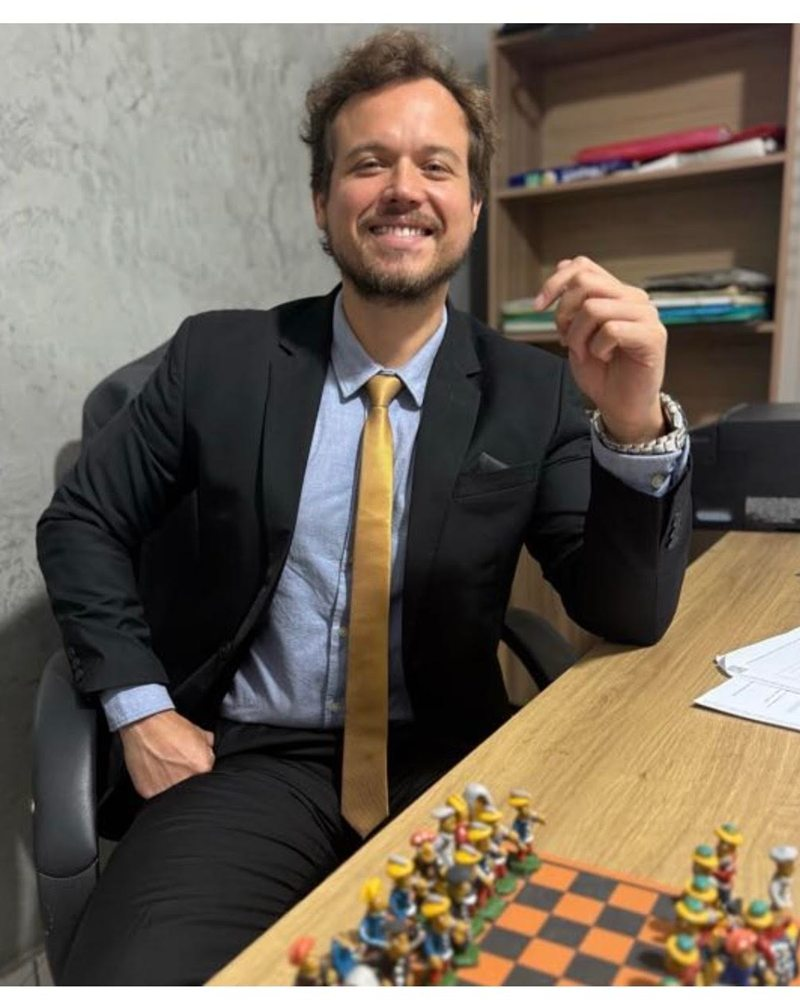

Direito
Advogado inscrito na OAB/MS sob o nº 18.115. Pós-graduação em Direito Civil e pós-graduação em Processo Civil. Formação em Direito Médico.
OAB/MS nº 18.115
Entender o caso. Entender o objetivo. Buscar o caminho mais efetivo.

Advogado, com cerca de 12 anos de experiência na área jurídica. O escritório fica em Corumbá, na fronteira com a Bolívia, e atende em todo o Brasil pelo processo eletrônico.
Defesa criminal, com foco na Lei de Drogas: prisão em flagrante, audiência de custódia, tráfico e suas modalidades, habeas corpus e defesa dos bens apreendidos.
Direito civil: indenizações, ações contra bancos e empresas, contratos, imóveis, família e sucessões, até os tribunais superiores.
Direito empresarial: sociedades, contratos entre empresas, conflitos entre sócios e organização patrimonial.
A formação civil e processual civil acompanha também a prática criminal, e faz diferença quando o processo alcança o patrimônio: bens apreendidos, veículos, valores e terceiros atingidos.
Advogado inscrito na OAB/MS sob o nº 18.115. Pós-graduação em Direito Civil e pós-graduação em Processo Civil. Formação em Direito Médico.
Engenheiro florestal, CREA/MS 70831. A leitura técnica de laudos e perícias entra na defesa quando a prova é técnica.
Português, inglês, espanhol, alemão e árabe. Na fronteira, o espanhol é parte do dia a dia do escritório.
Antes de qualquer peça, os fatos e os documentos. É deles que nasce a estratégia.
O que o cliente precisa de verdade: liberdade, reparação, segurança, tempo. Cada objetivo pede um caminho.
Buscar o resultado pelo caminho que mais funciona. Quando o cenário é adverso, reduzir o dano.
Preencha em um minuto. Ao enviar, abre o WhatsApp do escritório com a sua mensagem pronta; nada fica gravado neste site.